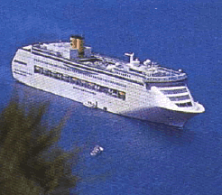

|  |
se volete saperne di più navigate in:
www.costa.it/victoria
Caratteristica principale: 40.000 metri quadrati di divertimento.
Personalità: forte e ricca di sorprese.
Costa Victoria è magica. È una nave che sa
adattarsi ai tuoi desideri, offrendosi con
innumerevoli luoghi di relax o divertimento.
Bella e spettacolare: è un piacere scoprirlo,
durante il soggiorno a bordo. Dalla Hall
quasi spaziale, con i suoi quattro ascensori
trasparenti e lo spettacolare Planetarium
dell'artista Gianfranco Pardi, alla Concorde
Plaza che offre un panorama inedito sul
mare con le sue ampie vetrate e la grande
fontana di acqua e luce ispirata ad un
disegno di Leonardo da Vinci.
Non mancheranno di stupirvi il maestoso
teatro con palcoscenico hollywoodiano, i
due ristoranti tra cui quello Gourmet "Il
Magnifico" con menù speciali, solo su
prenotazione e la sorprendente piscina
coperta, luogo di relax e di grande
suggestione.
Chi non la vede, non la immagina.
|